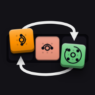

タイルを押すと、その絵柄の効果が発動してまわりのマスが動く。押したタイル自身は動かない。
まん中の「上下左右の 4 マスを時計回り」を押したところ
動かされたタイルは能力を持ったまま移る。同じ場所を押しても、次は別の効果になる。
回転は長押し（右クリックでも可）で逆向き。盤の端はつながっていないので、効果が盤の外に出る位置では使えない。
プレイ画面の「目標の柄」と同じ色の並びにすればクリア。同じ絵柄どうしはどれでもよい。
ホームの一覧は盤のサイズ × 難しさ（難しいほど、混ぜた手数もブロックの種類も増えます）。カードを押すと始まり、クリアした回数がカードに出ます。途中でやめた盤は「続きから」。行き詰まったら「ヒント」と「解説」。
¥500・1 回の買い切り
購入すると上の内容がすぐに開きます。支払いは Apple の購入画面で行い、返金は Apple の決まりに従います。
iPhone のアプリで購入できます。
購入済みです。ありがとうございます。
広告を見ると、このステージを 1 回遊べます。
友達から届いたメッセージを、そのまま貼ってください。
0:00
盤面が動いて目標の柄まで揃います。この盤面は自分で解けなくなります。